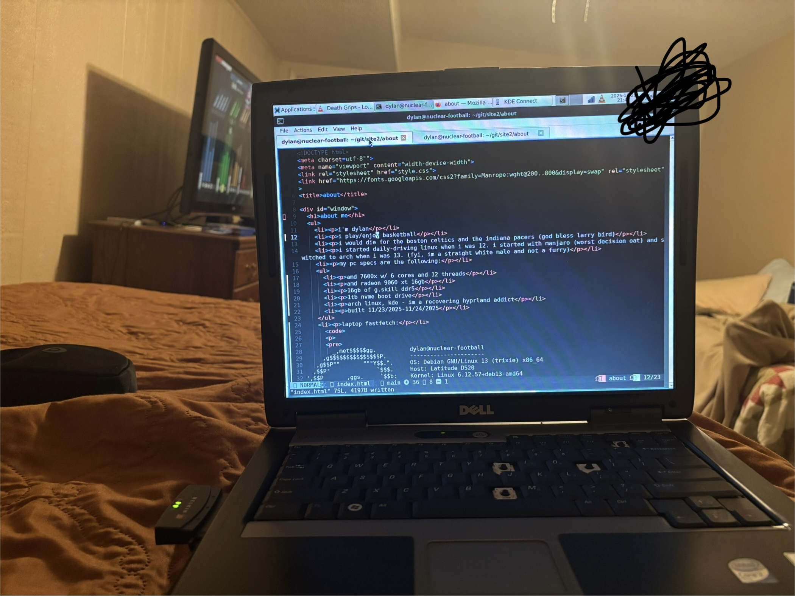

about me
i'm dylan
i play/enjoy basketball
i would die for the boston celtics and the indiana pacers (god bless larry bird)
i started daily-driving linux when i was 12. i started with manjaro (worst decision oat) and switched to arch when i was 13. (fyi, im a straight white male and not a furry)
my pc specs are the following:
amd 7600x w/ 6 cores and 12 threads
amd radeon 9060 xt 16gb
16gb of g.skill ddr5
1tb nvme boot drive
arch linux, kde - im a recovering hyprland addict
built 11/23/2025-11/24/2025
laptop fastfetch:


_,met$$$$$gg. dylan@nuclear-football
,g$$$$$$$$$$$$$$$P. ----------------------
,g$$P"" """Y$$.". OS: Debian GNU/Linux 13 (trixie) x86_64
,$$P' `$$$. Host: Latitude D520
',$$P ,ggs. `$$b: Kernel: Linux 6.12.57+deb13-amd64
`d$$' ,$P"' . $$$ Uptime: 13 mins
$$P d$' , $$P Packages: 1778 (dpkg)
$$: $$. - ,d$$' Shell: bash 5.2.37
$$; Y$b._ _,d$P' Display (LPL0000): 1024x768 @ 60 Hz in 15"
Y$$. `.`"Y$$$$P"' DE: Xfce4 4.20
`$$b "-.__ WM: Xfwm4 (X11)
`Y$$b WM Theme: Breeze
`Y$$. Theme: Xfce [GTK2/3/4]
`$$b. Icons: Tango [GTK2/3/4]
`Y$$b. Font: Sans (10pt) [GTK2/3/4]
`"Y$b._ Cursor: Adwaita
`"""" Terminal: x-terminal-emulator
CPU: Intel(R) Core(TM)2 T5500 (2) @ 1.67 GHz
GPU 1: Intel Mobile 945GM/GMS/GME
GPU 2: Intel Mobile 945GM/GMS
Memory: 998.41 MiB / 1.92 GiB (51%)
Swap: 173.62 MiB / 1.99 GiB (9%)
Disk (/): 6.07 GiB / 30.44 GiB (20%) - btrfs
Disk (/home): 11.96 GiB / 413.73 GiB (3%) - btrfs
Local IP (wlan0): 192.168.0.14/24
Battery (DELL 00): 100% [AC Connected]
Locale: en_US.utf-8

i'm a devout lutheran. praise be to God and the gifts He has bestowed upon me
contrary to popular belief, i cant program, although i did write this website by hand (html and css isnt programming)
i have untreated torticollis, as diagnosed by the lovely folks at urgent care
i play the saxophone (two years) and the piano (4-5 years)
i'm an honor student. never gotten less than a b+ (my theater teacher quit half way through the semester) thus far. i was in the honors society until i resigned in 2025
favorites:
favorite movie oat is the computer wore tennis shoes (1969)
favorite game is super doomspire on roblox
favorite non-roblox game is team fortress 2. i main engi, formerly medic before i lost it
favorite album/mixtape is death grips's exmilitary
my favorite band changes frequently, but for a while i've been leaning towards kero kero bonito. time n' place is probably my second favorite album, and my favorite song of all time is lipslap by kero kero bonito, or perhaps i talk to the wind by king crimson. again, it changes a lot.
favorite tv show is mr. robot
favorite anime is neon genesis evangelion. i wish asuka was real